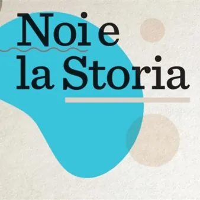

da sab 3 ott a ven 16 ott
NOI e la Storia
Ronchi torna la rassegna dedicata alla memoria di «Sguardi e racconti da un passato in comune» A Ronchi dei Legionari, la 17esima edizione di “Noi e la Storia”. Si tratta della rassegna autunnale dedicata al tema “Sguardi e racconti da un passato in comune” che attraverso sei…
 Indicazioni
Indicazioni
- Costi e prenotazioni
- Costo non indicato · Prenotazione non indicata
- Programma
- Programma da verificare. Apri la fonte ufficiale per orari e possibili aggiornamenti.
- In caso di maltempo
- Nessuna indicazione specifica pubblicata.
- Note
- Acquisito automaticamente dalla fonte.
L’EVENTO
Descrizione completa
Noi e la Storia
Sguardi e racconti da un passato in comune
Ecco il programma completo dell’edizione autunnale della rassegna Noi e la Storia Sabato 3 ottobre ore 9.00 Escursione storico letteraria Poetiche pietraie: Ungaretti sul Carso Con Elisa De Zan – Esperta specializzata siti Grande Guerra Da San Martino del Carso, piccolo borgo devastato dalla guerra che ispirò il poeta per la composizione dell’omonima lirica, si salirà incrociando il “Sentiero Ungaretti” sul Monte San Michele per un’escursione storico-letteraria volta ad approfondire l’esperienza umana, bellica e poetica vissuta da Ungaretti sul Carso.
Nel corso dell’iniziativa si visiteranno anche il Museo del Monte San Michele con il suo innovativo allestimento e la Cannoniera di Cima 3. Ritrovo: San Martino del Carso (Piazza della Fontana) Durata complessiva (soste incluse): 4 ore circa Grado di difficoltà: facile Abbigliamento e calzature da trekking, acqua, merenda, zaino. Prenotazione obbligatoria scrivendo a: cristina.laurenti@comuneronchi.it entro il giorno 1 ottobre specificando nome, cognome, data di nascita e codice fiscale per motivi assicurativi. In caso di maltempo l’evento sarà posticipato a data da destinarsi. Lunedì 5 ottobre ore 18.00 Conferenza e inaugurazione mostra Egitto. Vita di villaggio 1978-1982 Giovanni Canova – Docente di lingua e letteratura araba e islamistica Giovanni Canova ha dedicato gran parte della sua carriera accademica e di ricerca studiando le tradizioni popolari dell’Alto Egitto, dello Yemen e di altri paesi arabi. Già docente di lingua e letteratura araba presso l’Università Ca’ Foscari di Venezia e l’Università “L’Orientale” di Napoli, ha documentato tra il 1978 e il 1982 in una prospettiva etnografica il patrimonio culturale egiziano tramite registrazioni sonore su nastro, diapositive e fotografie B/N, film in Super-8. Mercoledì 7 ottobre ore 18.00 Presentazione libro Luoghi nascosti della prima guerra mondiale di Vinko Avsenak, Karl Pallasmann e Marco Pascoli Intervengono gli Autori l volume prende forma da decenni di ricerche sulla storia e sui siti della Prima Guerra Mondiale, svolte con particolare riferimento al fronte italo-austriaco fra la Val Pusteria e il Mare Adriatico. La suddivisione in capitoli di questo libro risponde ad una classificazione geografica che tiene conto della prospettiva militare in voga nel periodo bellico, talvolta difforme dagli attuali confini politico-amministrativi o dalle percezioni di appartenenza delle comunità locali. Venerdì 9 ottobre ore 18.00 Conferenza Le abbazie friulane tra Medio Evo ed età moderna Miriam Davide – Docente di storia medievale presso l’università degli studi di Trieste La storia dei monasteri benedettini in Friuli si estende per circa un millennio, ed è racchiusa tra due date e momenti storici fondamentali: il 762, evento fondativo legato alla nascita dell’abbazia di Sesto al Reghena, e la conclusione (seconda metà del XVIII secolo), quando la Repubblica di Venezia decreta la soppressione delle storiche abbazie di Rosazzo, Moggio, Sesto e Summaga. Un ruolo di primo piano, sia a livello spirituale che economico e di potere giurisdizionale, è stato ricoperto anche dai monasteri femminili di Cividale e Aquileia. Sabato 10 ottobre ore 9.00 Escursione storico letteraria Escursione storica alla scoperta dei “graffiti della grande guerra” sulle alture di Vermegliano
con Marco Pascoli – Ricercatore storico ed autore / Esperto specializzato siti Grande Guerra/ Accompagnatore di Media Montagna Collegio Guide Alpine FVG / International Mountain Leader UIMLA
L’itinerario ripercorre uno dei sentieri storici più affascinanti del Carso Isontino, tra Ronchi dei Legionari (nella frazione di Vermegliano) e le alture legate alle memorie della Grande Guerra. Dalla caratteristica piazzetta di Vermegliano, nei pressi della chiesetta di Santo Stefano ci si incammina imboccando Salita Ugo Polonio. La via sale tra le case del paese, superando la linea ferroviaria per poi iniziare la ripida ascesa su fondo cementato che conduce direttamente verso l’altopiano carsico alla scoperta del patrimonio epigrafico della Prima Guerra Mondiale insistente sul territorio locale. R itrovo: Piazzetta Santo Stefano, presso Vermegliano Durata complessiva (soste incluse): 4 ore circa Grado di difficoltà: Escursionistica (E), con tratti fuori sentiero in ambiente carsico piuttosto sconnesso. Dislivello di circa 100 metri. Non sono presenti esposizioni sul vuoto o difficoltà tecniche.
Abbigliamento e calzature da trekking, acqua, torcia elettrica, merenda, zaino.
Prenotazione obbligatoria scrivendo a: cristina.laurenti@comuneronchi.it entro il giorno 8 ottobre specificando nome, cognome, data e codice fiscale per motivi assicurativi. In caso di maltempo l’evento sarà posticipato a data da destinarsi. Lunedì 12 ottobre ore 18.00 Presentazione libro Dizionario storico del goriziano tra l’Austria interiore e gli stati successori (secoli XVI-XX) Giovanni (Janko) Toplikar – S torico Dialoga con l’autore Ferruccio Tassin – Storico Il presente Dizionario mette a disposizione il significato e il contesto temporale di 3316 termini in uso per lungo tempo nelle province della Stiria, della Carinzia, della Carniola (con l’Istria interna), a Gorizia e Gradisca, a Trieste e Fiume, nonché nei diversi possedimenti minori degli Asburgo che confinavano con tale area. La ricerca delle voci si è concentrata in particolare sulla Contea di Gorizia e sulla sua storia dal XVI alla prima metà del XX secolo includendo i riferimenti all’età medievale e al Patriarcato di Aquileia, al Monfalconese, all’Istria, al Triestino e alla parte occidentale dell’odierna Slovenia. Mercoledì 14 ottobre ore 18.00 Conferenza Donna. Dalla strega alla femme fatal di Gustav Klimt Marina Bressan – Docente e germanista L’enigma donna è il cuore pulsante delle conferenze e degli studi di Marina Bressan dedicati a Gustav Klimt. L’autrice ed esperta, che collabora attivamente con la Gustav Klimt Foundation di Vienna , analizza come il pittore austriaco abbia scardinato la morale borghese del suo tempo attraverso una rappresentazione totale, complessa e sfaccettata del femminino. Venerdì 16 ottobre ore 18.00 Presentazione del libro La guerra dentro. Dalle trincee del Carso a Fiume Fabio Todero – Dottore di ricerca in italianistica, ricercatore dell’Istituto Regionale per la Storia della Resistenza e dell’Età Contemporanea del Friuli Venezia Giulia Il volume analizza uno dei passaggi più drammatici e decisivi della storia europea contemporanea: la Grande Guerra e le sue conseguenze politiche, sociali e culturali sul territorio adriatico e sul Novecento europeo. A partire dalle vicende del fronte carsico e della città di Fiume, il volume ricostruisce l’impatto profondo del conflitto sul destino collettivo e individuale, evidenziando come la Prima Guerra Mondiale abbia rappresentato la frattura che pose fine alla Belle Époque e aprì la lunga stagione delle guerre, delle violenze e dei totalitarismi del ventesimo secolo. Tutti gli incontri presso l’Auditorium comunale sono gratuiti e ad ingresso libero. Per le due escursioni è invece prevista la prenotazione.
IL PROGRAMMA
Programma e orari
Appuntamenti raccolti dalle fonti elencate. Dove manca un orario, non è ancora disponibile in questa scheda.
Programma pubblicato
- Dal 2026-10-03 al 2026-10-16
INFORMAZIONI UTILI
Prima di partire
- Controllare la fonte prima di partire.
ORGANIZZAZIONE